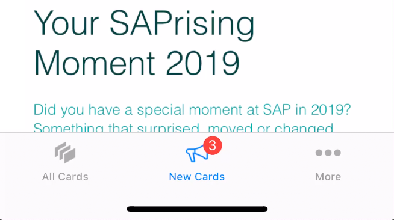
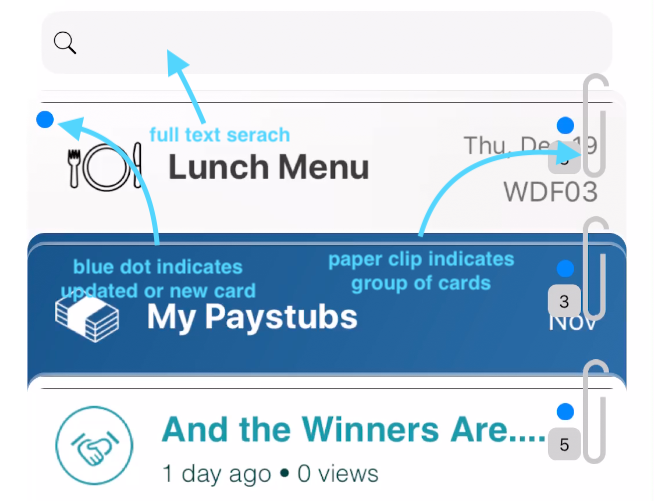
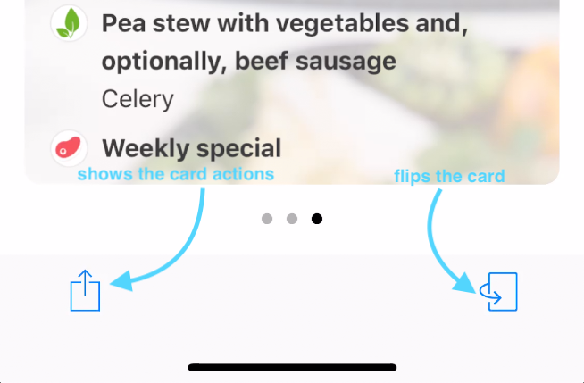
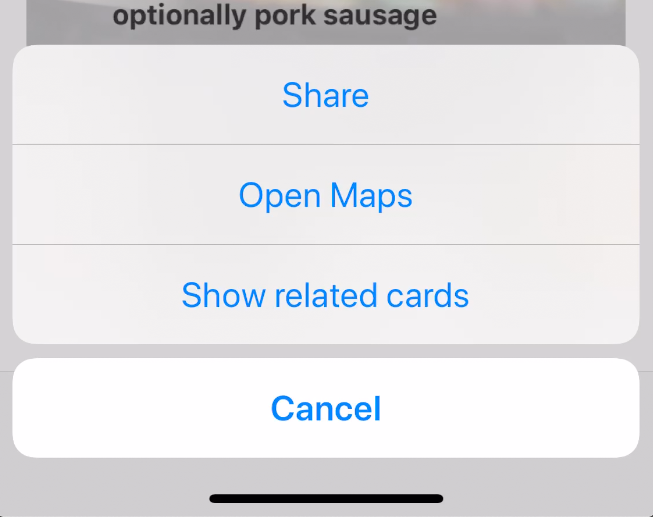

Welcome to SAP Mobile Cards
Congratulations on installing SAP Mobile Cards. The following images will guide you through the app.
First, when new cards arrive, they will be displayed in the New Cards Section...

Switching to the "All Cards" Section in the Tab Bar will display all of your available cards. Here, you can...

Tapping on a card opens the detail view for a card:

Furthermore, there are some actions for each card:

There are various actions that might be available once the Action icon is tapped. If the card has an associated address, phone number(s), web site(s), or email address(es), then these become 'actionable' when you tap the Action icon. For example, if there is a phone number, and you tap on the Action icon, you are given the option to call the number directly. If there is an address, you can open the address in Maps, etc.
Back of the Card
Tap on the 'Flip' icon (...) in the bottom right of the card, and carry on reading...
© SAP 2020